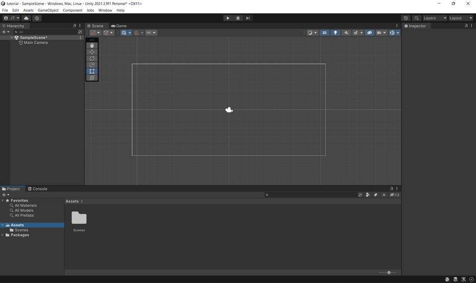
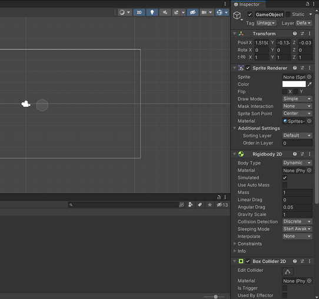
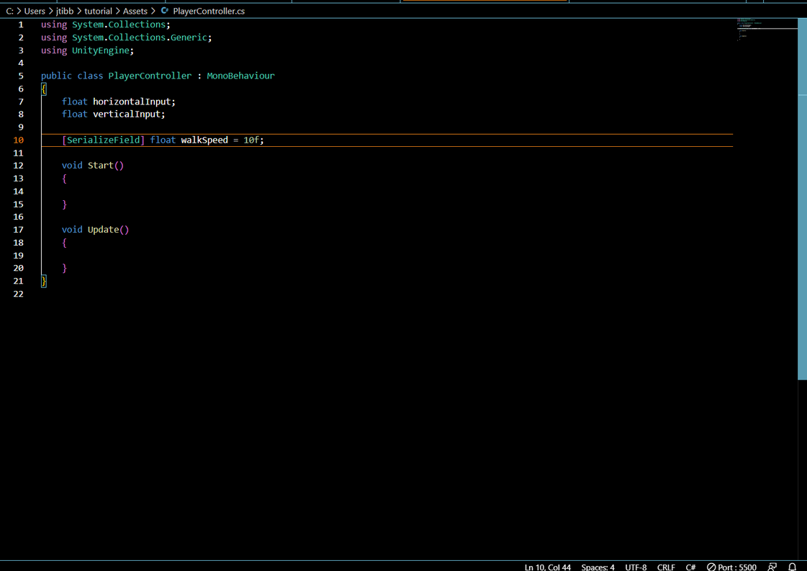
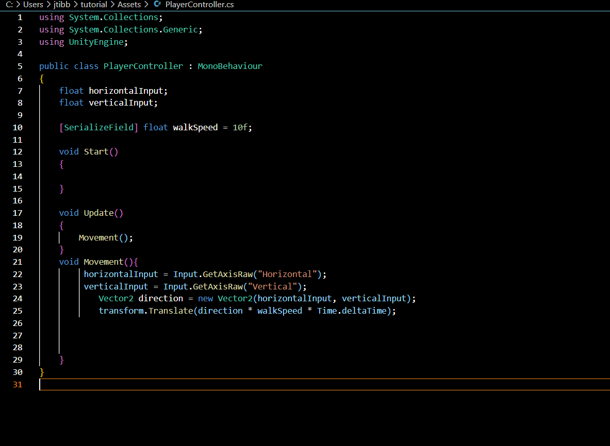
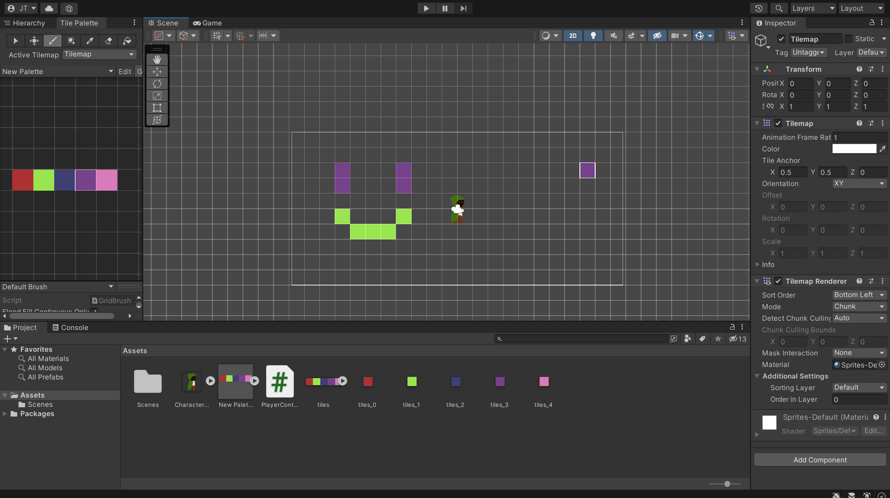
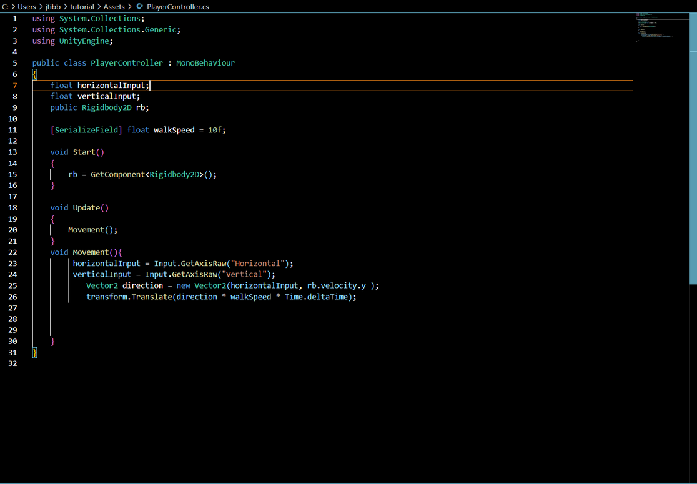
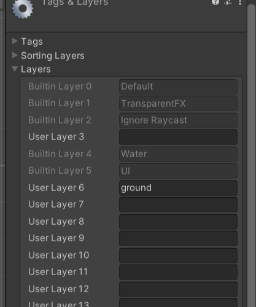
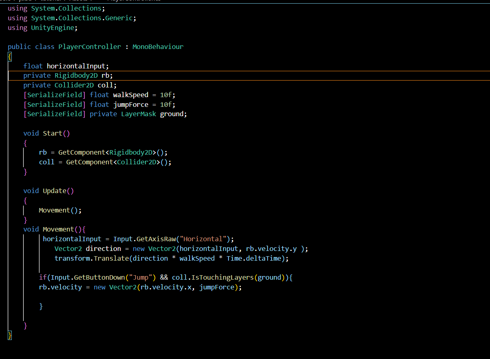

Starting out
To start off this project, open the Unity Hub and click new project. Make sure that 3D is selected for the type of game. From here, name the project what you want and click create project. Here you will see your workspace.
Mine is set up in a way that you see the assets on the bottom, hierarchy on the let and the inspector on the right.
To get started, we need to add a character. To do this, right click on the hierarchy and add click create empty. This creates an empty object. In the inspector, there will be nothing.
The basic components we need to add to the character a sprite renderer, physics body, and a collider. To find these, click on add component and look up sprite renderer, rigidbody 2d, and a box collider 2d.
The sprite renderer gives the character a sprite, the box collider allows the character to have a hitbox and interact with the environment, and the rigid body allow the character to have physics applied to it.
In the rigidbody2d component, go to restraints and freeze z rotation. After that, go to the box collider and click edit collider. Drag the squares to roughy fit your character.
To give the character a sprite, add your character picture into the assets folder. Once there, select the character and drag the picture into the area under sprite renderer that says "sprite" and says none. If the picture turns out blurry, you may need to edit the photo. Select it in the assets folder and change the filter mode to point (no filter), the compression to none and if it is a pixel art character, set the pixels per unit to the height or width of the picture. Then hit apply.
Throughout this whole project, you will see the use of [SerializeField]. This is just a variable that is able to be changed from the Unity editor directly.
===={From here you can either contniue making a top down game or go to the part about making a platformer}====
2D Top Down Games
A top down game is a game that has the perspective of the camera in the sky. The character usually only moves on the ground with little to no vertical movement. Examples include older Pokemon games, Bloons Tower Defense, and Plants Vs. Zombies
Under the rigidbody, we will want to change gravity scale to 0.
For movement, go to your character and under add component, this time add a new script. Name it what you want, but I will name mine PlayerController. Double click it to open up visual studio code. Here we will see the funtions Start() and Update(). Start runs through the code within it only when the app starts. Update runs through it's code every frame.
Above the start field, we are going to add a couple variables. We add two floats, one labeled horizontalInput and the other verticalInput. Finally, we need to make a [SerializeField] float named walk speed and set it to 10f. The picture shows this below.
Under the updates function, we want to put down Movement();. This calls a function we are about to make. Underneath the movement function, we add the movement funciton. This is created by adding void Movement(){}. Within the curly brackets, we will define the variables we made earlier. Since this is harder to explain over text, so the image below will show the added code and will be explained.
The first two lines in movement detect if the arrow keys are pressed and which way they are. For example, if the left arrow is pressed, horizontalInput is negative, but if right arrow is pressed, it is positive. The vector2 gets the direction to move the character and the last line moves the character in that direction.
All that's left is adding the world around you. Back in the Unity editor, drag the camera in the hierarchy onto the character. Now right click in the hierarchy and under 2D object, go to tile map and click rectangular. From here, go to window in the upper bar and under 2D, click 2D and tile palette. This will open the tile palette. You can drag the new tab to next to the hierarchy. To create a tile palette, bring in the picture you want for it. From there select the picture and remove any compression and filters the same as before. To show this step, I will be using basic colors as my tiles. Under sprite mode in the picture, select multiple. Below that should be sprite editor. Open it up and click slice. Change the type to cell size and change the pixel size to the size of how large you want your tiles to be. I used 16 by 16. Then hit slice and apply. From there, go to the tile map window again and select create new tile palette. Press create and choose a folder. From there, drag your tiles into the editor and select the folder. You are able to drag the entire picture, so you don't have to drag them one by one. From there, you can draw your environment.
Finally, go back to the hierarchy and add a tilemap collider component to the tilemap.
After all that, you should be able to press play at the top and move your character around the area and not move past the borders you created.
2D Platformer Games
A platforming game is a game that has the perspective of the camera facing the character. The character jumps around from platform to platform in order to progress through the level. Examples include Hollow Knight, the original Mario, and Celeste.
A lot of the aspects of this also are used in the top down games. The tile palette will stay the same, so it would be good to follow that part of the tutorial to start.
For this, make sure the rigidbody has mass and gravity. This can be tweaked to how ever you want it to be.
Once again, the code would be difficult to explain, so I will have a picture and talk about what is there.
The added variable allows us to call the rigid body in the start function. In the movement area, the y velocity has been replaced with the rigidbody expression which just lets the y velocity stay the same. All that's needed is a way to jump. Back in the unity editor, click the tile map and the layers in the upper right. After that, click Add Layer and add ground in 6 as shown below.
Set the tileset to be that layer and go back to the player's code. Here, we will add jumping. Once again, the code will be shown below.
Here we added a way to call the collider the same way we did for the rigidbody. Then we also made a field for detecting if we are touching a layer. Under movement, we add an if statement to see if the "jump" button was pressed (default is space) and if the collider is touching the ground layer. If both are true, the character will have the jump force in the y direction.
Back in the Unity editor, we need to click on the character and set ground to be the ground layer in the script component. From there, set up your level, walking speed and jumpforce to be what you want them to be and you can start making the level.